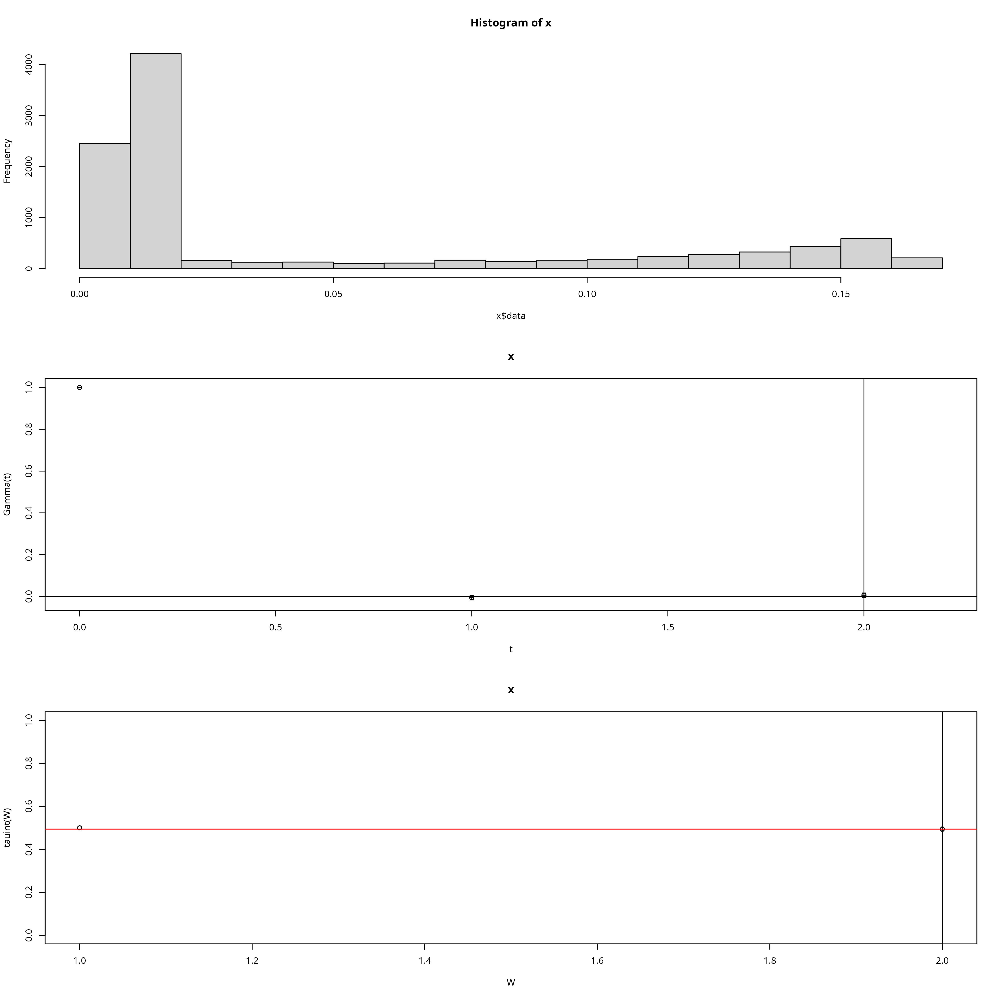
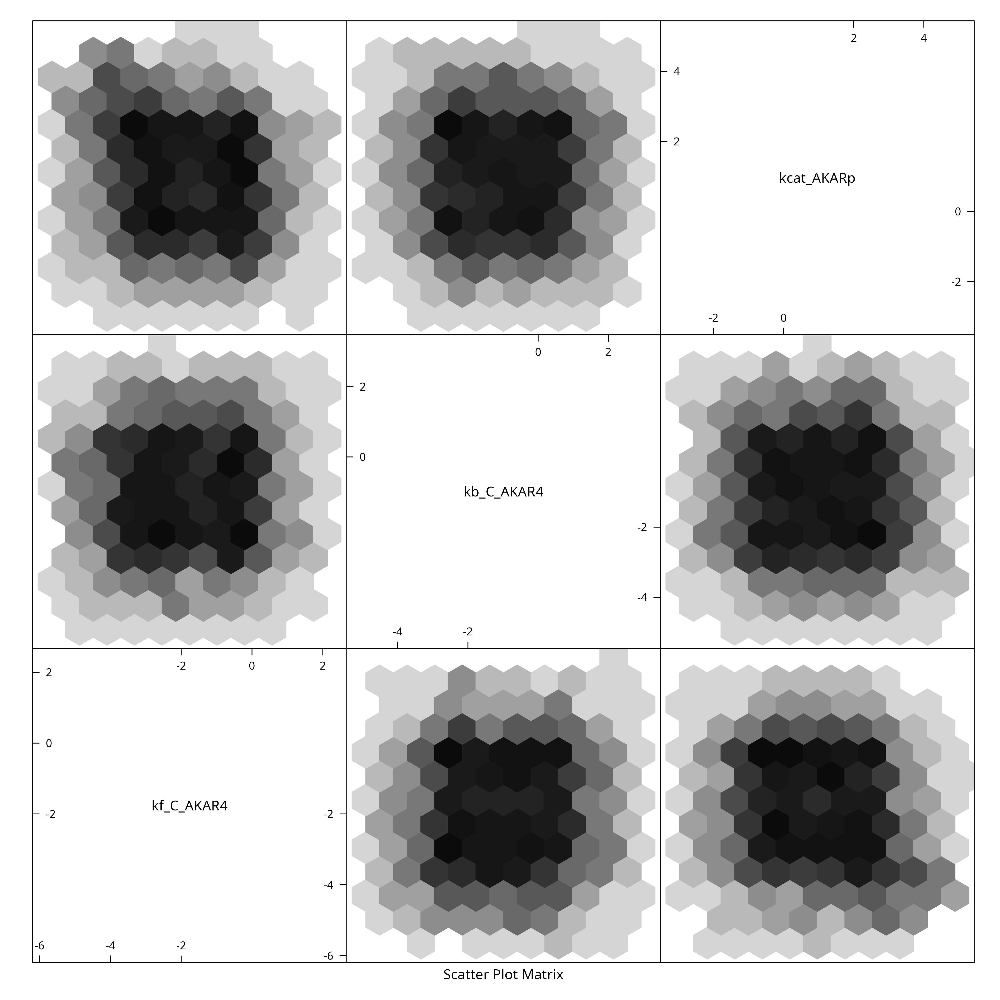
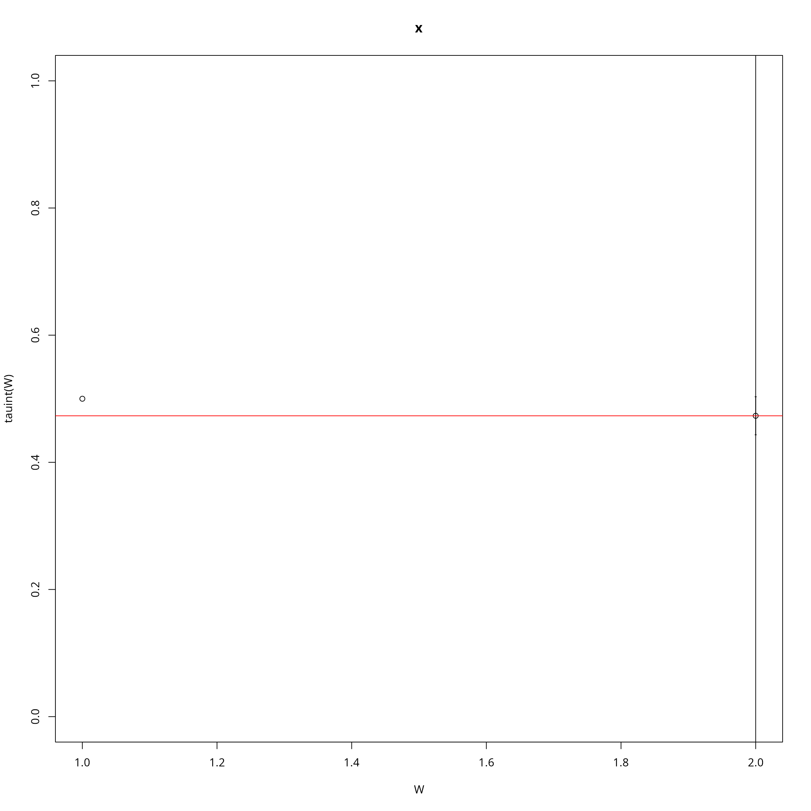
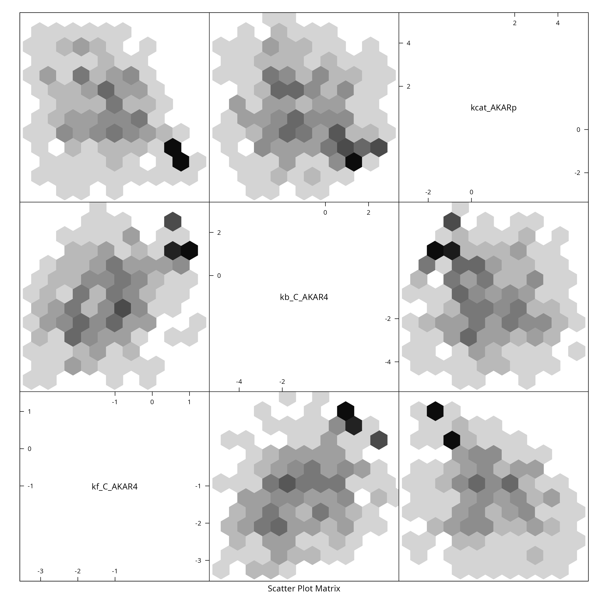
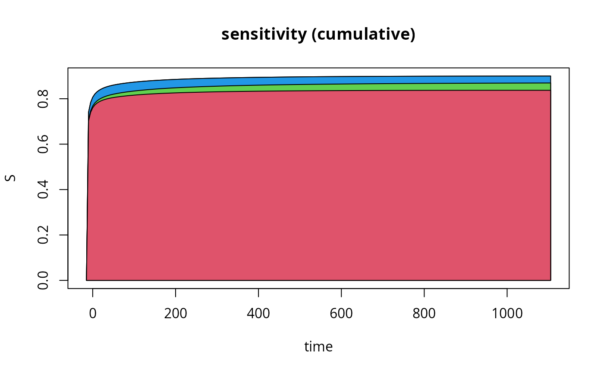

Sample AKAR4 via ABC
AKAR4.RmdWe load the model from a collection of TSV files
(inst/extdata/AKAR4 on github), the function below locates
the tsv files after package installation:
modelFiles <- uqsa_example("AKAR4",full.names=TRUE)Then we import the contents as a list of data.frames
SBtab <- sbtab_from_tsv(modelFiles) # SBtabVFGEN
#> [tsv] file[1] «AKAR4_100nM.tsv» belongs to Document «AKAR4»
#> I'll take this as the Model Name.
#> AKAR4_100nM.tsv AKAR4_25nM.tsv AKAR4_400nM.tsv AKAR4_Compound.tsv AKAR4_Experiments.tsv AKAR4_Output.tsv AKAR4_Parameter.tsv AKAR4_Reaction.tsvWe load the R functions of the model (e.g. the jacobian of the model):
-
AKAR4_vf, the vector field, -
AKAR4_jac, the jacobian, -
AKAR4_default, the default parameters
The R file we source additionally includes a variable called
model, which serves the purpose of having generic names for
all model constituents, to make it easier to write generic scripts:
-
model$vf()corresponds toAKAR4_vf()- but does not use AKAR4 in the name
- otherwise identical
-
model$jac()corresponds toAKAR4_jac() -
model$nameis a string,"AKAR4"in this case
This can help to write fairly general scripts where the model’s name appears only at the top. You can investigate the sourced file to find out more.
Generally, model is a list of functions, one of which is
called model$par() and returns the default parameters of
the model in linear space:
source(uqsa_example("AKAR4",pat="^AKAR4[.]R$")) # loads "model"
model$name # AKAR4#> [1] "AKAR4"
model$par() # default values for parameters#> kf_C_AKAR4 kb_C_AKAR4 kcat_AKARp
#> 0.018 0.106 10.200
model$init() # default initial values for ODE state variables#> AKAR4 AKAR4_C AKAR4p C
#> 0.2 0.0 0.0 0.0The model exists in R and C form: - AKAR4.R -
AKAR4_gvf.c
The file ending in _gvf.c contains functions used for
simulations with rgsl::r_gsl_odeiv2_outer()
(_gvf.c needs to be compiled to a shared library). The
functions in .R can be used more freely in R, and are
functionally identical (they describe the same model, but solutions are
slower in R).
The next function call checks that the model [...]_gvf.c
file exist, and builds a shared library .so from these
sources. It attaches a comment to its return value that indicates how
the shared library for this model is named:
modelName <- checkModel("AKAR4",uqsa_example("AKAR4",pat="_gvf[.]c$")) # SBtabVFGEN
#> building a shared library from c source, and using GSL odeiv2 as backend (pkg-config is used here).
#> cc -shared -fPIC `pkg-config --cflags gsl` -o './AKAR4.so' '/home/andrei/R/library/uqsa/extdata/AKAR4/AKAR4_gvf.c' `pkg-config --libs gsl`
comment(modelName) # should be AKAR4.so
#> [1] "./AKAR4.so"The comment will be used to find the .so file (if you
move that file, adjust the comment on the modelName).
We want to sample in logarithmic space, so we set up a mapping
function parMap. The sampler will call this function on the
sampling variable parABC before it simulates the model.
parMap <- function (parABC=0) {
return(10^parABC)
}The ODE model receives a parameter vector p for each
experiment. It consists of the biological model parameters (which are
the same for all experiments), and input parameters (which together with
initial conditions distinguish the experimental setups). This model
doesn’t have input parameters, so the biological and ODE parameters are
the same. Otherwise, two different kinds of parameters are concatenated
into one big numeric vector inside of the solver. The model function
AKAR4_default() returns the default values for
p.
Next, we load the list of experiments from the same list of
data.frames (SBtab content):
experiments <- sbtab.data(SBtab)
parVal <- AKAR4_default()
print(parVal)
#> kf_C_AKAR4 kb_C_AKAR4 kcat_AKARp
#> 0.018 0.106 10.200Define lower and upper limits for log-uniform prior distribution for the parameters:
Define Number of Samples for the pre-calibration npc and
each ABC-MCMC chain ns. During ABC, we save every 100-th
point, so work(nChains*ns*100) ≈ work(npc):
ns <- 2500 # ABC-MCMC sample size
npc <- 50000 # pre-calibration size
delta <- 0.02
set.seed(2022)
nCores <- parallel::detectCores()
options(mc.cores=nCores)We define a function that measures the distance between experiment and simulation:
distanceMeasure <- function(funcSim, dataExpr, dataErr = 1.0){
distance <- mean(((funcSim-dataExpr$AKAR4pOUT)/max(dataExpr$AKAR4pOUT))^2,na.rm=TRUE)
return(distance)
}If the data is very informative, then the difference between the
prior and posterior are large. In such cases, it may be difficult to
find the posterior through sampling. Dividing the data into chunks and
processing them sequentially can help. Our model of the posterior of
previous chunks is based on Copulas and the VineCopula
package.
We divide the workload into chunks and loop over the chunks in th ecode block below.
The ABCMCMC function returns 1% of all sampled points, because of the
very low acceptance rates of the ABC method. This is the reason for the
comparatively low sample size request ns: the simulation
workload will be proportional to 100*ns. But the returned
sample is of a very high quality, with very low apparent
auto-correlation (because we omitted the large number of repeated
points).
chunks <- list(c(1,2),3)
priorPDF <- dUniformPrior(ll, ul)
rprior <- rUniformPrior(ll, ul)
start_time = Sys.time()
for (i in seq(length(chunks))){
expInd <- chunks[[i]]
simulate <- simulator.c(experiments[expInd],modelName,parMap,noise=TRUE)
Obj <- makeObjective(experiments[expInd],modelName,distanceMeasure,parMap,simulate)
time_pC <- Sys.time()
pC <- preCalibration(Obj, npc, rprior, rep=3)
time_pC <- difftime(Sys.time(),time_pC,units="secs")
cat(sprintf("\t - time spent on precalibration: %g seconds\n",time_pC))
time_ABC <- Sys.time()
mcmc <- ABCMCMC(Obj, as.numeric(pC$startPar), ns, pC$Sigma, delta, priorPDF)
time_ABC <- difftime(Sys.time(),time_ABC,units="mins")
cat(sprintf("\t - time spent on ABC-MCMC: %g minutes\n",time_ABC))
if (i>1){
simulate <- simulator.c(experiments[chunks[[1]]],modelName,parMap)
Obj <- makeObjective(experiments[chunks[[1]]],modelName,distanceMeasure,parMap,simulate)
mcmc$draws <- checkFitWithPreviousExperiments(mcmc$draws, Obj, delta)
}
C <- fitCopula(mcmc$draws)
priorPDF <- dCopulaPrior(C)
rprior <- rCopulaPrior(C)
}#> Warning in getMCMCPar(prePar, preDelta, p = p, sfactor = sfactor, delta = delta, : distances between experiment and simulation are too big; selecting the best (50000) parameter vectors.#> - time spent on precalibration: 35.4065 seconds
#> Started chain.
#>
#> n = 10000
#> n = 20000
#> n = 30000
#> n = 40000
#> n = 50000
#> n = 60000
#> n = 70000
#> n = 80000
#> n = 90000
#> n = 1e+05
#> n = 110000
#> n = 120000
#> n = 130000
#> n = 140000
#> n = 150000
#> n = 160000
#> n = 170000
#> n = 180000
#> n = 190000
#> n = 2e+05
#> n = 210000
#> n = 220000
#> n = 230000
#> n = 240000
#> n = 250000 - time spent on ABC-MCMC: 42.7174 minutes#> Warning in getMCMCPar(prePar, preDelta, p = p, sfactor = sfactor, delta = delta, : distances between experiment and simulation are too big; selecting the best (50000) parameter vectors.#> - time spent on precalibration: 25.4763 seconds
#> Started chain.
#>
#> n = 10000
#> n = 20000
#> n = 30000
#> n = 40000
#> n = 50000
#> n = 60000
#> n = 70000
#> n = 80000
#> n = 90000
#> n = 1e+05
#> n = 110000
#> n = 120000
#> n = 130000
#> n = 140000
#> n = 150000
#> n = 160000
#> n = 170000
#> n = 180000
#> n = 190000
#> n = 2e+05
#> n = 210000
#> n = 220000
#> n = 230000
#> n = 240000
#> n = 250000 - time spent on ABC-MCMC: 30.2787 minutes
#>
#> -Checking fit with previous data
#> -- 466 samples did not fit previous datasets#> Time difference of 1.236569 hoursWe plot the sample as a two dimensional histogram plot-matrix using the hexbin package:
colnames(mcmc$draws)<-names(parVal)
#
if (require(hadron)){
ac <- hadron::uwerr(data=mcmc$scores,pl=TRUE)
tau <- ceiling(ac$tauint+ac$dtauint)
i <- seq(1,NROW(mcmc$draws),by=tau)
} else {
i <- seq(1,NROW(mcmc$draws),by=2)
}

A sensitivity plot using the results of the above loop:
where y[[1]] refers to the simulation corresponding to
the first experiment: experiment[[1]], and
$func refers to the output function values (rather than
state variables). The outout functions are defined in the table
SBtab$Output.
f<-aperm(y[[1]]$func[1,,]) # aperm makes the sample-index (3rd) the first index of f, default permutation
S<-globalSensitivity(mcmc$draws,f)
S[1,]<-0 # the first index of S is time, and initially sensitivity is 0
cuS<-t(apply(S,1,cumsum))
plot.new()
tm<-experiments[[3]]$outputTimes
plot(tm,cuS[,3],type="l",xlab="time",ylab="S",main="sensitivity (cumulative)")
## this section makes a little sensitivity plot:
for (si in dim(S)[2]:1){
polygon(c(tm,rev(tm)),c(cuS[,si],numeric(length(tm))),col=si+1)
}